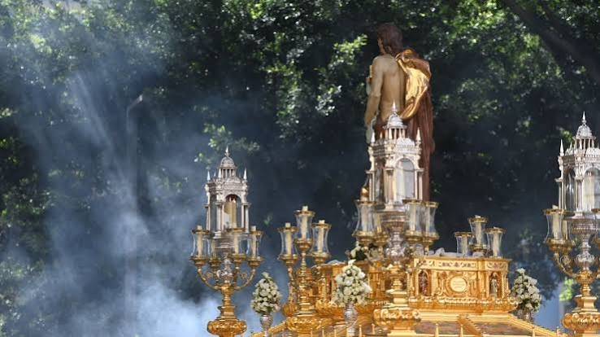

Historia, devoción y el caminar del Cautivo
El Domingo de Resurrección es el broche de oro y la celebración de la vida. La Agrupación de Cofradías procesiona al Santísimo Cristo Resucitado y María Santísima de los Cielos. En este desfile participan representaciones con las túnicas y estandartes de todas las corporaciones que han salido a la calle durante la semana, inundando el recorrido oficial de color, júbilo y un ambiente plenamente festivo.

Resucitado
La procesión que cierra oficialmente la Semana Santa de Málaga. Está organizada directamente por la Agrupación de Cofradías y en ella participan representantes de todas las hermandades vistiendo sus respectivas túnicas en un desfile lleno de luz y color.